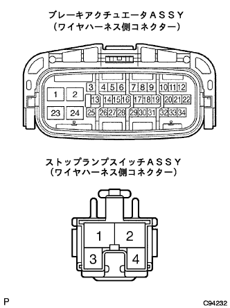

DTC C1249/49 ストップランプ断線異常 |
| DTCNo. | DTC検出条件 | DTC出力関連項目 |
|---|---|---|
| 1249/49 | IG端子電圧が9.5-17.2Vで、ブレーキペダル開放(STP OFF)中にストップランプスイッチ回路の断線(A-B間またはA-ボデーアース間)が0.3秒以上継続 |
|
| 手順1 | ストップランプ点灯点検 |
IGスイッチをONにしてブレーキペダルを踏み込み、ストップランプが点灯することを確認する。
|
| ||||
| OK | |
| 手順2 | ワイヤハーネスおよびコネクター点検（ストップランプスイッチASSY-ブレーキアクチュエータASSY） |
IGスイッチをOFFにして、ブレーキアクチュエータASSYおよびストップランプスイッチASSYのコネクターを切り離す。
コネクターのケースおよび端子に変形、腐蝕がないことを点検する。
|  |
SST(トヨタエレクトリカルテスター)を使用して、ブレーキアクチュエータASSYの10(STP)←→ストップランプスイッチASSYの1端子間のワイヤハーネスの導通を点検する。
|
| ||||
| OK | |
| 手順3 | ワイヤハーネスおよびコネクター点検（GND1、GND2） |
IGスイッチOFFでブレーキアクチュエータASSYのコネクターを切り離す。
 |
SST(トヨタエレクトリカルテスター)を使用して、ブレーキアクチュエータASSYのワイヤハーネスの2(GND1)、24(GND2)端子←→ボデーアース間の導通を点検する。
|
| ||||
| OK | |
| 手順4 | ダイアグノーシスコード消去 |
ダイアグノーシスコードを消去する。(要領は参照)
| GO | |
| 手順5 | ダイアグノーシスコード再確認 |
走行テストを行い、ダイアグノーシスコードを再確認する。(要領は参照)
| A | 正常 |
| B | 異常コード |
|
| ||||
| A | ||
| ||